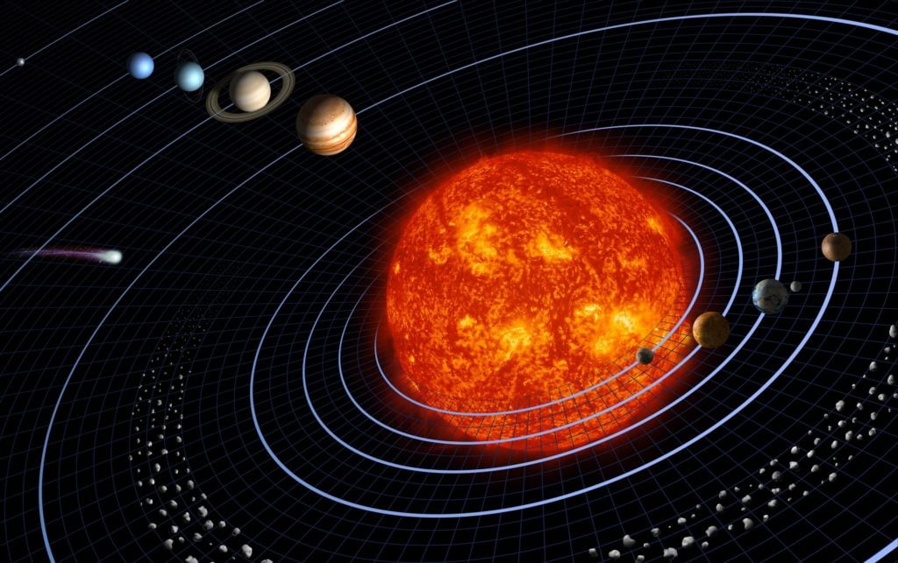

Le sytème solaire est très grand, 14 959 000 000 de km de diamètre pour être précis avec 2 ceintures d'astéroïdes (la ceinture de Kuiper au-delà de l'orbite de Neptune et la ceinture principal entre Mars et Jupiter) ,
les 8 planètes (Mercure, Vénus, Terre, Mars, Jupiter, Saturne, Uranus et Neptune et non Pluton car c'est une planète naine), les 5 planètes naines (Cérès, Pluton, Hauméa, Makémaké et Éris),
les 214 lunes (je ne vais pas les citées, ce sera trop long) et notre soleil.
